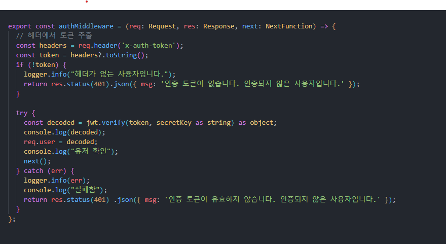
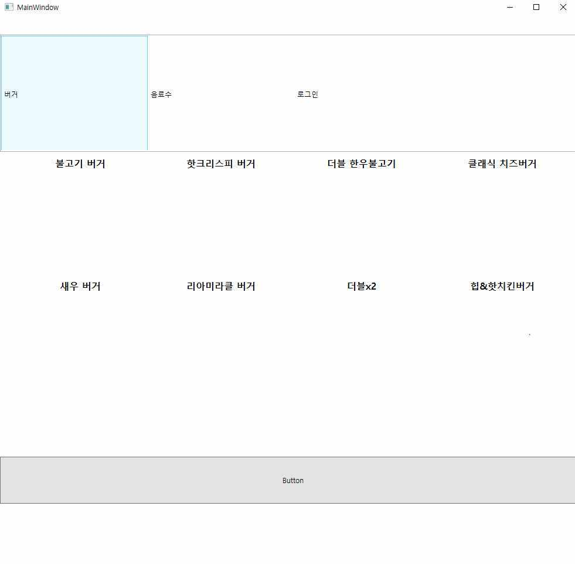
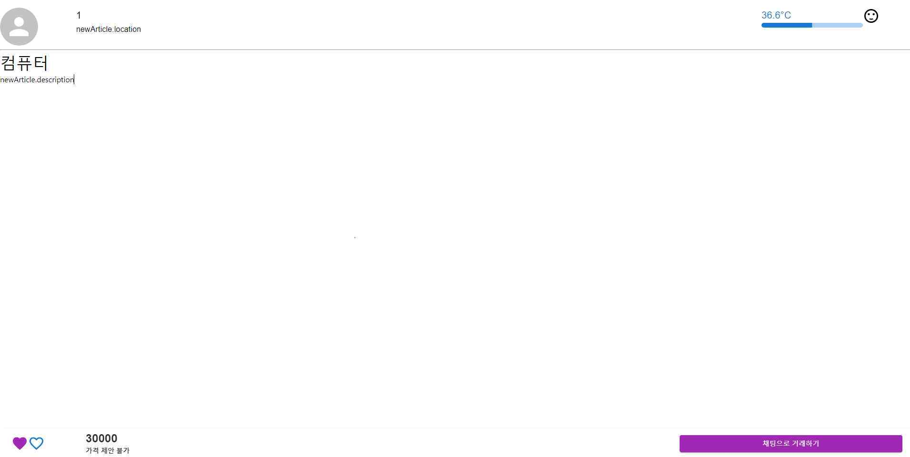

웹·인프라 운영에서 출발해 실전 침해사고를 직접 분석하고 복구하며 보안으로 방향을 잡은 엔지니어입니다. 개발, 인프라 운영, 보안(방어)을 한 사람이 관통하는 것을 강점으로 생각합니다.

인증·권한 통제를 설계 단계부터 넣은 풀스택 프로젝트. 방어 코드를 짠 뒤 직접 SQL 인젝션과 세션 탈취를 시도해 검증했습니다.
github.com/ki0915/wiki-backend →
클라이언트–서버–DB를 처음 혼자 설계한 프로젝트. 지금 기준으로는 보안 취약점이 있는 코드지만, 이후 프로젝트에서 어떻게 달라졌는지 보여주기 위해 그대로 남겨두었습니다.
github.com/ki0915/Kiosk →
React·Node.js 기초를 다진 첫 웹 프로젝트. CORS, JSON 파싱, 무한 API 호출 문제를 직접 디버깅하며 원인을 추적했습니다.
github.com/ki0915/carrot-backend →OWASP Docker Top 10, CIS Docker Benchmark, NIST SP 800-190을 위험도·구현 비용 순으로 재구성한 실무 레퍼런스.
github.com/ki0915/Docker-Security-Guide →tkops365@gmail.com